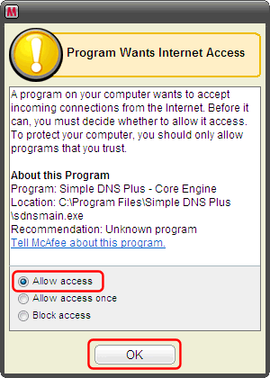
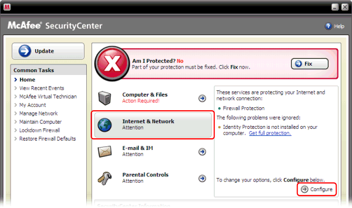
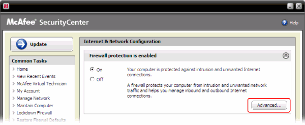
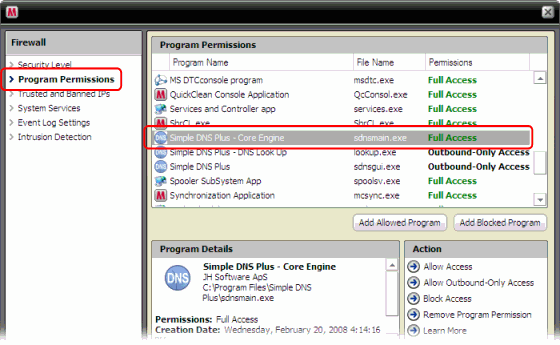

McAfee Internet Security Suite is a product from McAfee, Inc. - www.mcafee.com
The firewall in McAfee Internet Security Suite monitors network traffic by application.
Simple DNS Plus consists of several executable module (applications) which each must be granted access to the Internet. These modules are:
- "Simple DNS Plus - Core Engine" (sdnsmain.exe)
- "Simple DNS Plus - DNS Look Up" (lookup.exe)
- "Simple DNS Plus - DNS Record Editor" (editrecs.exe)
- "Simple DNS Plus - GUI" (sdnsgui.exe)
The first time you use each of these modules on a computer with McAfee Internet Security Suite, you may get a messages like this:

Select "Allow Access" and click the "OK" button.
You may have to do this once for each of the 4 modules mentioned.
If you encounter any problems, from the McAfee SecurityCenter main window, click "Internet & Network", and then "Configure":

Then click the "Advanced..." button:

Select "Program Permissions", and make sure that Simple DNS Plus has "Full Access" permissions:
